| 日付 | 2015年8月8日（土） - 2015年8月11日（火） | ||||||
|---|---|---|---|---|---|---|---|
| 山域 | 八ヶ岳、中央アルプス、近畿の山 | ||||||
| メンバー | 家族（妻、長女・4歳、長男・2歳） | ||||||
| 山行形態 | 子連れ3泊4日ホテル泊 | ||||||
| アクセス | 車、ロープウェイ | ||||||
| ルート (Map1) |
|
今年の夏休みは木曽駒ヶ岳を目指すことにする。
昨年の夏休みに一度計画を立てたが、雨で行くことができなかった。
夏休みは3年連続雨に見舞われているが、今年こそは晴れるだろうか？
1日目
本日は明日に備えて駒ヶ根で宿泊する予定だ。
現地に向かうだけでは時間が余ってしまうので、霧ヶ峰の八島ヶ原湿原を訪れる。
朝早く家を出たため、駐車場は空いている。標高1645m。
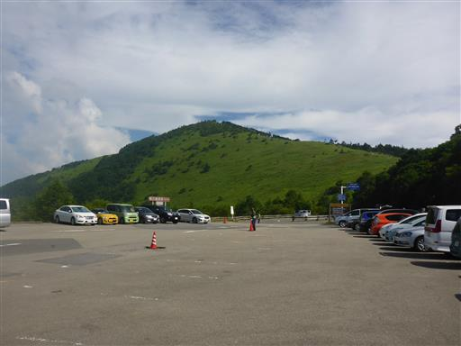
車道の下のトンネルを抜ける。
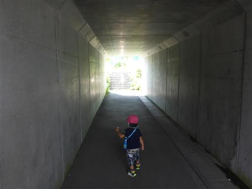
少し歩くと、すぐに湿原に到着する。
大きな標識に書かれている「七島八島」は八島ヶ原湿原の別名だ。
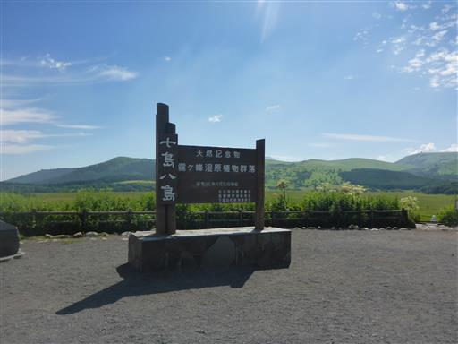
目の前に広大な湿原が広がる。面積は43haらしい。
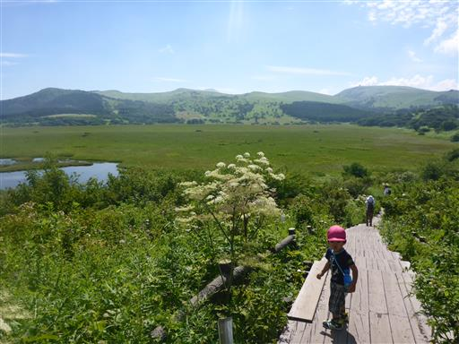
眼下に八島ヶ原湿原で最大の池である八島ヶ池が見える。
白い花はシシウドだろうか？
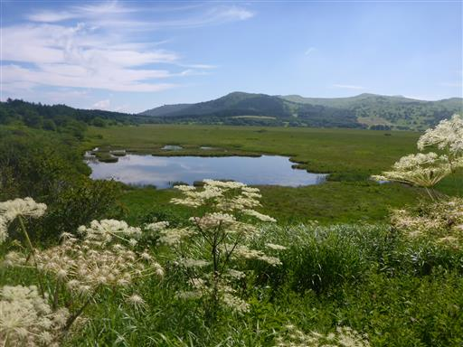
タチフウロ。この辺りは植物名を記した標識が多いため、同定が楽だ。
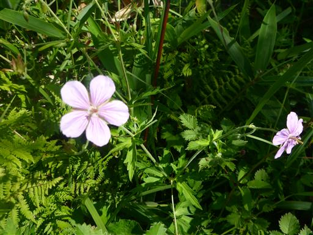
2本の木道が並行して設置されている。
木道の高さまで笹が生い茂っていて地面が見えないためか、
息子は3度ほど木道から落ちて、頭から笹薮に突っ込んでいた…
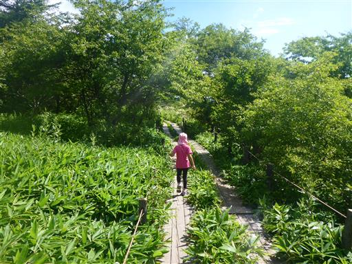
オオバギボウシだろうか？美しい紫色だ。
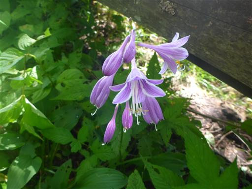
鮮やかなヤナギランの花。
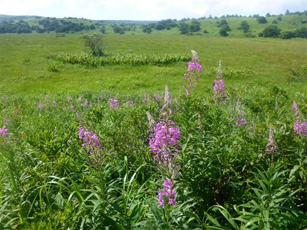
シモツケソウ。こちらも鮮やかだ。
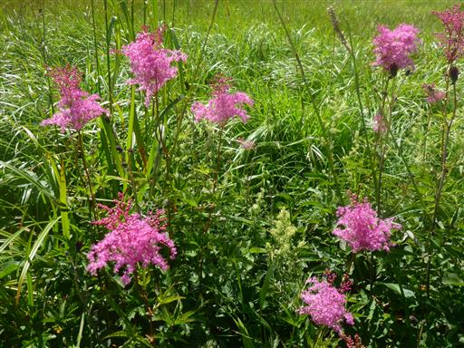
様々な花が咲き乱れていて非常にカラフルだ。

古めの木道なのか、所々で壊れている場所がある。
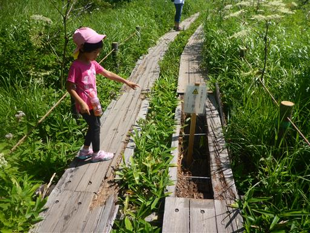
木道は湿原をぐるりと一周できるように設置されている。一周1時間半程度だ。
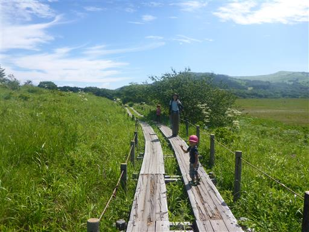
ここは日本最南端の高層湿原として知られている。
厚い泥炭層に覆われているが、所々に池が存在する。
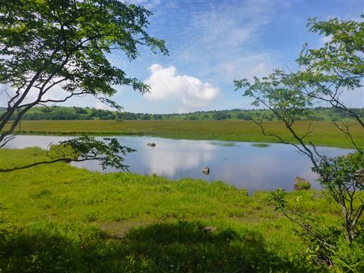
空を見上げると、雲がきれいな模様を描いている。
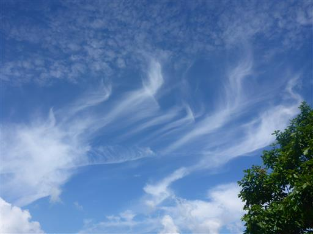
奥霧小屋に到着する。
木道周辺ではベンチが少なかったため、ここで腰を下ろして休憩している人が多い。
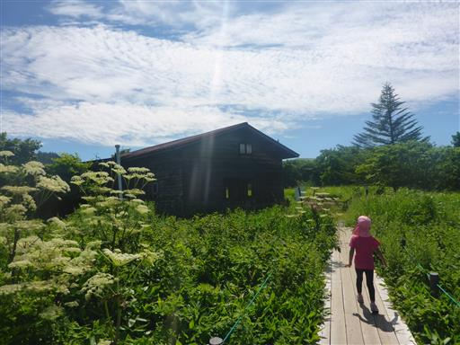
ここから先は残念ながら木道が整備されておらず、車道が始まる。
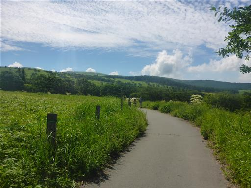
遠くに霧ヶ峰の最高峰、車山のレーダー観測所が見える。
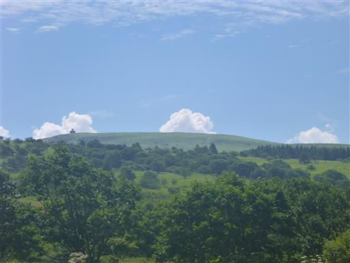
足元にナデシコの花が咲いている。
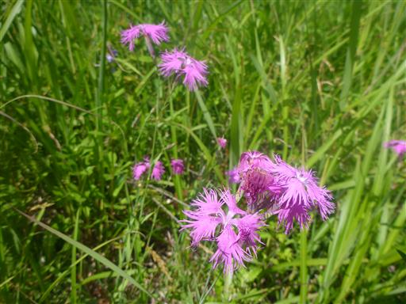
大きな水たまりを避けて歩く。
ここ最近雨を見ていないが、この辺りはよく夕立が降るのだろうか？
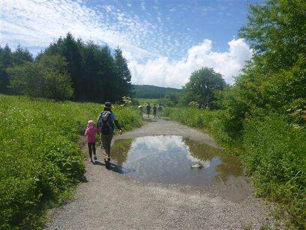
湿原を取り囲むように、動物除けの柵が設置されている。
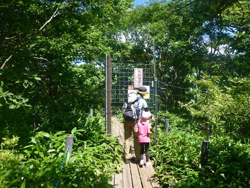
駐車場の側にある鷲ヶ峰が見える。なかなか格好良い山だ。
容易に登れる山なので、登りたい山リストに入れておく。
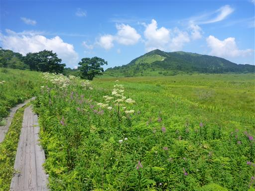
キンバイソウ。花はもう終わりかけだ。
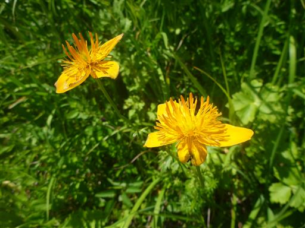
ベンチとテーブルがあったので、ここで昼食をとることにする。
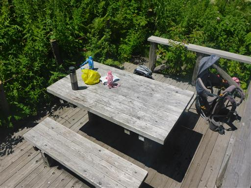
湿原一周まであとわずか。昼食をとったら残りの行程を歩く。
娘がトイレに行きたいと言って妻と先行したため、花を眺めながら息子とのんびり歩いていく。
こちらはクサレダマ。
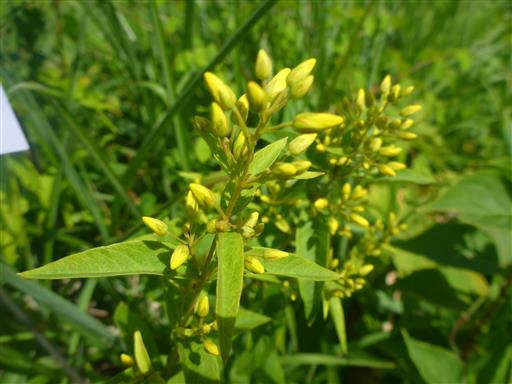
ヨツバヒヨドリに蝶がとまっている。
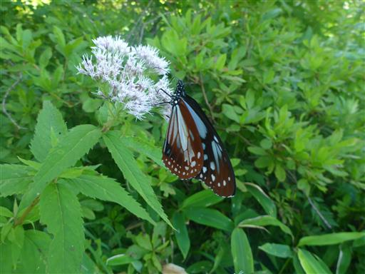
ヤブジラミ。地味な花だ。
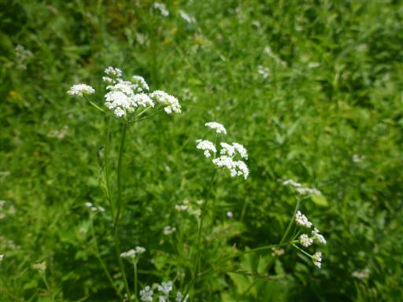
コウゾリナ。
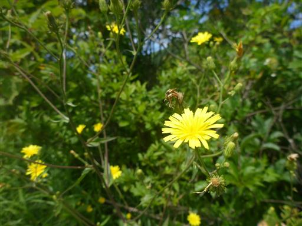
湿原を一周して元の場所に戻ってくる。景色は朝より鮮明になっている。
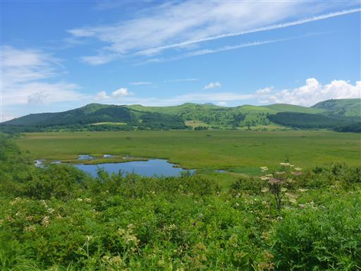
駐車場はもう車で一杯になっている。
思ったよりも早く湿原の観光を終えたので、売店でソフトクリームを食べながら
次の目的地を検討する。
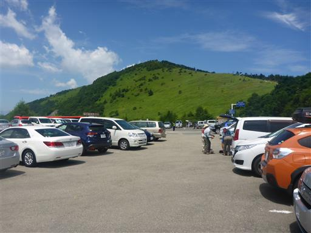
諏訪湖周辺で遊ぶことも考えたが、暑そうということで
横川渓谷の乙女滝を見に行くことにする。
さほど人気の場所とも思えないが、駐車場にはそこそこ車が停まっている。

車道を歩いていると、小さいのに水が激しく流れている川を見かける。
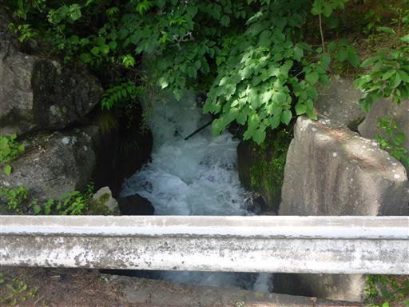
車道から少し下ると乙女滝に到着する。水量の多い立派な滝だ。
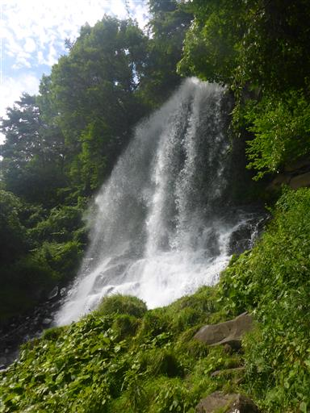
滝の側にある斜面を登ると、滝の裏側を見ることができる。
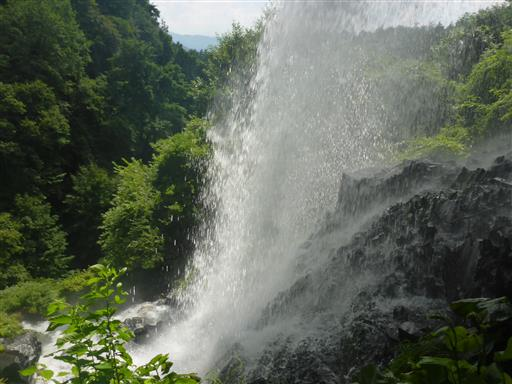
大量の水はものすごい勢いで岩の上を流れ落ちていく。
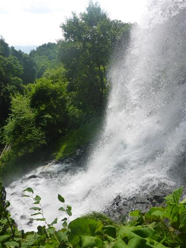
滝を見学したら、下を流れる川沿いまで下りてみる。
この辺りは横川渓谷沿いに1時間ほどの遊歩道が整備されている。
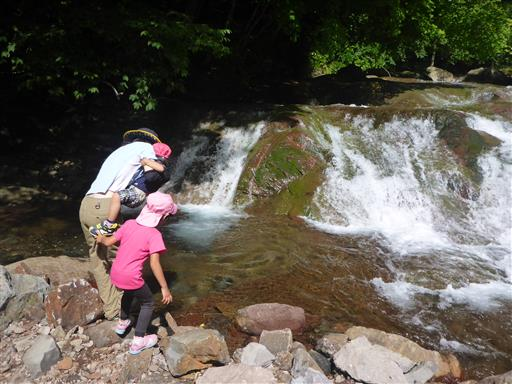
水は比較的きれいだ。
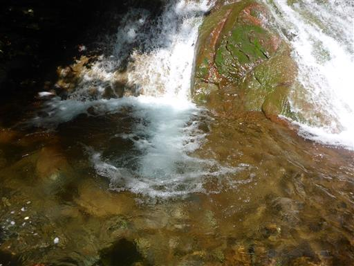
子供たちは手をつけたり、石を投げ入れたりして遊んでいる。
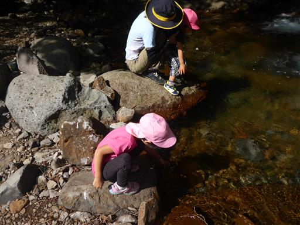
駐車場に戻る際に、水の流れの激しい小さな川を再度見てみる。
良く見たら、その水は車道の下を通ってそのまま乙女滝に繋がっていた。
ある程度水の流れを人工的にコントロールしているのだろうか？
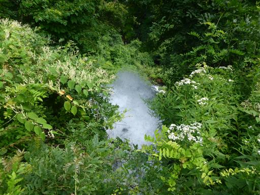
観光を終えたら駒ヶ根の宿に向かう。
本日の宿は「駒ヶ根高原 駒ヶ根ハイランドホテル」で、ここで2泊する予定だ。
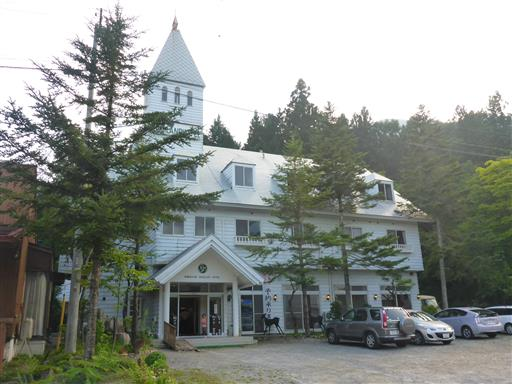
子供たちに木製の鳥を頂く。なかなかリアルな造りだ。
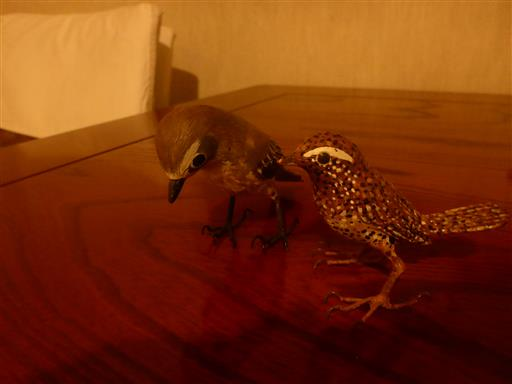
食後、ホテルで捕まえたカブトムシも頂く。
色々と気を配っていただいて有難い。
本日は明日に備えて早めに寝る。
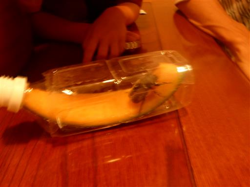